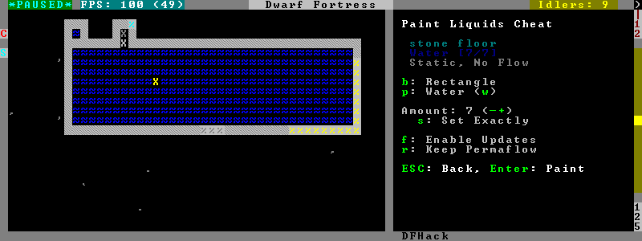

gui/liquids¶
This tool is a gui front-end to liquids and works similarly, allowing you to add or remove water/magma, and create obsidian walls & floors.
Warning
There is no undo support. Be sure the settings are what you want before hitting Enter!
The b key changes how the affected area is selected. The default Rectangle mode works by selecting two corners like any ordinary designation. The p key cycles through modes for adding water, magma, obsidian walls/floors, or modifying liquid tile properties.
When painting liquids, you can select the desired level with +-, and you can choose among setting it exactly, only increasing, or only decreasing with s.
In addition, f allows disabling or enabling the flowing water computations for an area, and r operates on the “permanent flow” property that makes rivers power water wheels even when full and technically not flowing.
After setting up the desired operations using the described keys, use Enter to apply them.
Usage¶
gui/liquids
Screenshot¶
